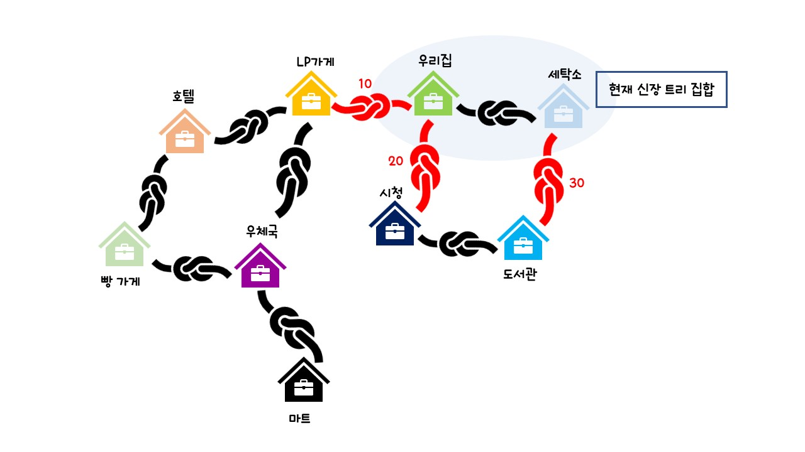

"Prim의 MST 알고리즘"
프림 알고리즘은 시작 정점에서부터 출발하여 신장 트리T 집합을 단계적으로 확장해나가는 방법이다.
시작 단계에서는 시작 정점 만이 신장 트리T 집합에 포함된다. Prim의 방법은 앞 단계에서 만들어진 신장 트리 집합에,
인접한 정점들 중에서 최저 간선으로 연결된 정점을 선택하여 트리를 확장해 나가는 방식이다.
이 과정은 트리가 n-1개의 간선을 가질 때까지 계속된다.

" 이제 본격적으로
예제 그래프를 가지고 Prime의 방법을 살펴보자! "
(1) 정점 a에서 출발한다고 하자. 맨 처음에는 신장 트리 집합은 {a}가 된다.
▶정점 a와 인접한 정점 : b, f
이 상태에서 인접 정점 중에서 최소 간선(a-f : 10)을 선택하면 신장 트리T 집합은 {a, f}가 된다.
(2) 이 상태에서 신장 트리T 집합에 인접한 정점을 살펴보면 b와 e가 있다.

▶정점 a와 인접한 정점(이미 포함된 정점은 제외된다) : b (가중치 : 29)
▶정점 f와 인접한 정점(이미 포함된 정점은 제외된다) : e (가중치 : 27)
간선 (a,b)와 간선(f,e)의 가중치를 비교해보면 (f,e)가 27로서 (a,b)의 29보다 작다.
따라서, (f,e)간선이 선택되고 정점 e가 신장 트리T 집합에 포함된다.
(3) 다음 단계에서 신장 트리T 집합은 {a, f, e}가 된다.
▶정점 a와 인접한 정점(이미 포함된 정점은 제외된다) : b (가중치 : 29)
▶정점 f와 인접한 정점(이미 포함된 정점은 제외된다) : -
▶정점 e와 인접한 정점(이미 포함된 정점은 제외된다) : d (가중치 : 22), g (가중치 : 25)
현재 상태에서 신장 트리T 집합에 인접한 정점을 살펴보면 b, d, g가 있다.
간선 (a,b)와 간선 (e,d), 간선 (e, g)의 가중치를 비교해보면 (e,d)가 22로서 (a,b)의 29, (e,g)의 25와 비교해보면 가장 작다.
따라서, (e,d)간선이 선택되고 정점 d가 신장 트리T 집합에 포함된다.
(4) 다음 단계에서 신장 트리T 집합은 {a, f, e, d}가 된다.
▶정점 a와 인접한 정점(이미 포함된 정점은 제외된다) : b (가중치 : 29)
▶정점 f와 인접한 정점(이미 포함된 정점은 제외된다) : -
▶정점 e와 인접한 정점(이미 포함된 정점은 제외된다) : g (가중치 : 25)
▶정점 d와 인접한 정점(이미 포함된 정점은 제외된다) : g (가중치 : 18), c (가중치 : 12)
현재 상태에서 신장 트리T 집합에 인접한 정점을 살펴보면 b, d, g가 있다.
현재 상태에서 신장 트리T 집합에 인접한 정점을 살펴보면 b, g, c가 있다.
간선 (a,b)와 간선 (e,g), 간선 (d,g), 간선 (d,c)의 가중치를 비교해보면 (d,c)가 12로서 다른 간선의 가중치와 비교해보면 가장 작다.
따라서, (d,c)간선이 선택되고 정점 c가 신장 트리 집합에 포함된다.
(5) 다음 단계에서 신장 트리T 집합은 {a, f, e, d, c}가 된다.
다음 단계에서 신장 트리T 집합은 {a, f, e, d}가 된다.
▶정점 a와 인접한 정점(이미 포함된 정점은 제외된다) : b (가중치 : 29)
▶정점 f와 인접한 정점(이미 포함된 정점은 제외된다) : -
▶정점 e와 인접한 정점(이미 포함된 정점은 제외된다) : g (가중치 : 25)
▶정점 d와 인접한 정점(이미 포함된 정점은 제외된다) : g (가중치 : 18)
▶정점 c와 인접한 정점(이미 포함된 정점은 제외된다) : b (가중치 : 16)
현재 상태에서 신장 트리T 집합에 인접한 정점을 살펴보면 b, g가 있다.
간선 (a,b)와 간선 (c,b), 간선 (e, g), 간선 (d,g)의 가중치를 비교해보면 (c,b)가 16로서 다른 간선의 가중치와 비교해보면 가장 작다.
따라서, (c,b)간선이 선택되고 정점 b가 신장 트리 집합에 포함된다.
(6) 다음 단계에서 신장 트리T 집합은 {a, f, e, d, c, b}가 된다.

▶정점 a와 인접한 정점(이미 포함된 정점은 제외된다) : -
▶정점 f와 인접한 정점(이미 포함된 정점은 제외된다) : -
▶정점 e와 인접한 정점(이미 포함된 정점은 제외된다) : g (가중치 : 25)
▶정점 d와 인접한 정점(이미 포함된 정점은 제외된다) : g (가중치 : 18)
▶정점 c와 인접한 정점(이미 포함된 정점은 제외된다) : -
▶정점 b와 인접한 정점(이미 포함된 정점은 제외된다) : g (가중치 : 15)
현재 상태에서 신장 트리T 집합에 인접한 정점을 살펴보면 g가 있다.
간선 (b,g)와 간선 (d,g), 간선 (e, g)의 가중치를 비교해보면 (b,g)가 15로서 다른 간선의 가중치와 비교해보면 가장 작다.
따라서, (b,g)간선이 선택되고 정점 b가 신장 트리 집합에 포함된다.
다음 단계에서 신장 트리T 집합은 {a, f, e, d, c, b, g}가 된다.